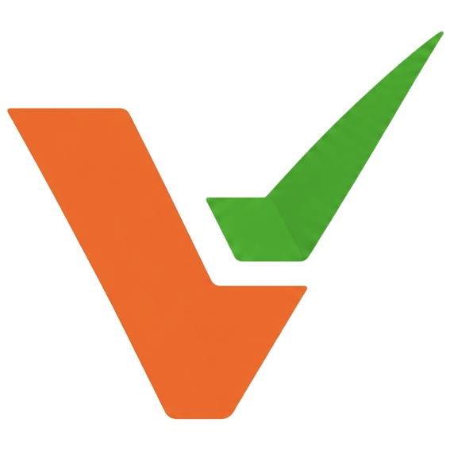

CHINA TO NIGERIA · SIMPLIFYING IMPORTS
Import from China.
Trade with Confidence.
NowV helps Nigerian businesses and aspiring importers source products from China through a coordinated import process — from finding suppliers and communicating with manufacturers to product inspection, payment coordination and delivery.
From Chinese suppliers to Nigerian businesses. One coordinated import journey.
THE PROBLEM
Importing from China Shouldn't Be This Complicated.
For many Nigerian businesses, importing involves dealing with multiple intermediaries, unfamiliar suppliers, language barriers and disconnected processes. Every step can introduce uncertainty, additional costs and unnecessary delays.
Unreliable Suppliers
Finding trustworthy manufacturers and suppliers in China can be difficult, especially without reliable local connections.
Language Barriers
Communicating with Chinese suppliers, negotiating prices and confirming product specifications can be challenging.
Product Uncertainty
Buyers may struggle to verify product quality, quantities and specifications before goods leave China.
Payment Risks
Cross-border payments can expose buyers to uncertainty, limited protection and difficulties resolving disputes.
Fragmented Logistics
Sourcing agents, inspectors, cargo handlers and shipping providers often operate independently, making the process difficult to coordinate.
The Trust Gap
Without transparency and coordination, importers can face hidden charges, unexpected delays and costly mistakes.
THE NOWV SOLUTION
One Coordinated Process. From China to Nigeria.
NowV is building a more accessible and transparent way for Nigerian businesses to import from China. Instead of navigating disconnected intermediaries and processes independently, importers can access coordinated support across supplier sourcing, communication, product inspection, payment coordination and international logistics. Our approach combines real-world trade operations with technology to make importing simpler, more transparent and more reliable.
Discover Our ProcessSupplier Access
Connecting Nigerian buyers with manufacturers and suppliers in China.
Greater Transparency
Bringing more visibility and coordination to the import process.
End-to-End Coordination
Connecting the different stages of importing through one coordinated workflow.
WHO WE SERVE
Built for Businesses at Every Stage of Importing.
Whether you already import from China or are preparing to place your first order, NowV is designed to make the process more accessible.
Existing Importers
For Nigerian traders and established businesses who already import but need better supplier access, clearer communication, reliable inspection coordination and more transparent logistics.
Aspiring Importers
For individuals and businesses looking to start importing but lack the supplier connections, experience or confidence to navigate the process independently.
Business Partners
For Chinese suppliers, manufacturers, logistics providers and trade professionals interested in building more accessible China–Nigeria trade connections.
HOW IT WORKS
From Supplier Search to Final Delivery.
We are building a coordinated import workflow that connects every important stage of sourcing products from China and getting them to Nigeria.
Supplier Sourcing
Identify suitable manufacturers and suppliers in China based on your product requirements.
Communication
Coordinate communication, product specifications, quotations and negotiations with suppliers.
Product Inspection
Coordinate physical checks to help verify product quality, specifications and quantities before shipment.
Payment Coordination
Facilitate a more transparent payment process between buyers and suppliers, with payment protection being part of our broader vision.
International Logistics
Coordinate cargo consolidation, shipping arrangements and movement of goods from China to Nigeria.
Nigeria Delivery
Coordinate the final stage of the import journey, helping goods reach their intended Nigerian destination.
WHY NOWV
More Than Finding Suppliers. Building Trust in Trade.
Importing should not require buyers to independently manage a complicated network of suppliers, intermediaries and logistics providers. NowV is focused on bringing greater coordination, visibility and accessibility to the China–Nigeria import journey. By understanding the realities of Nigerian traders and combining that experience with technology, we aim to build a more dependable way to participate in international trade.
Built Around Real Trade
Grounded in the practical challenges faced by Nigerian importers.
Transparency First
Focused on clearer communication, coordination and visibility.
Technology Driven
Building toward a more connected and accessible international trade experience.
LET'S CONNECT
Ready to Make Importing from China Simpler?
Whether you're an existing importer, an aspiring business owner, a Chinese supplier or a potential partner, we'd like to hear from you. Let's build a more accessible and transparent China–Nigeria trade experience together.
Start a Conversation
Have an import enquiry, partnership proposal or investment interest? Get in touch with our team.
ContactWe look forward to hearing from you.